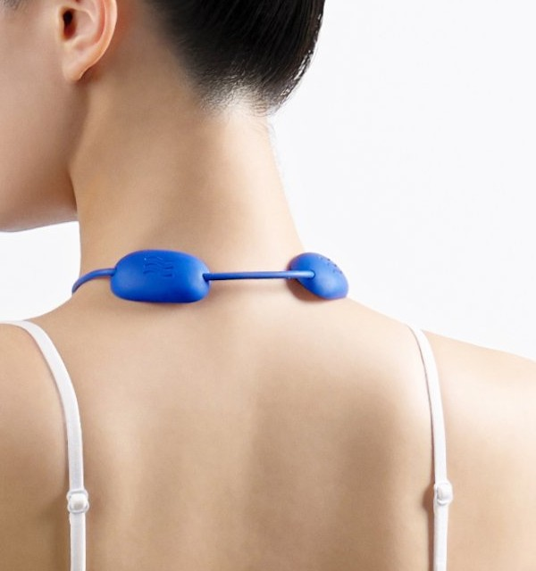
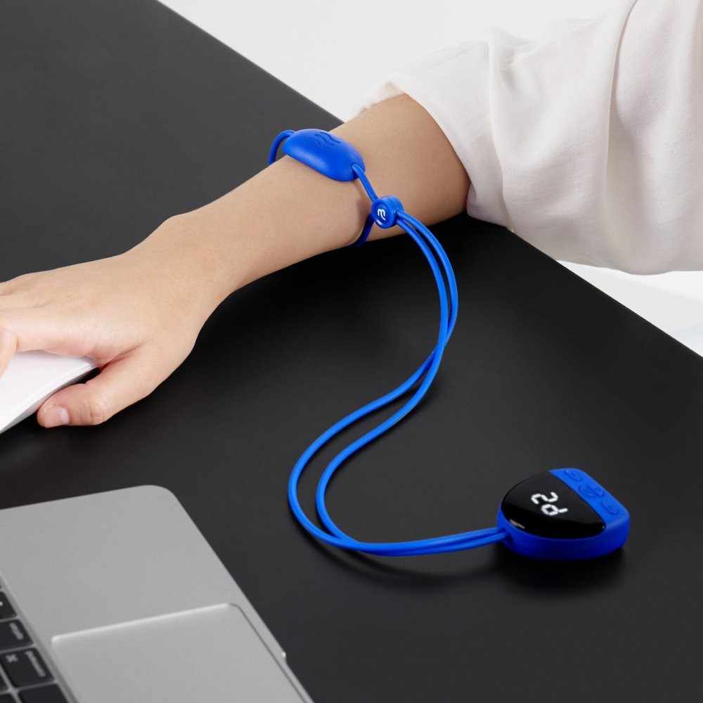
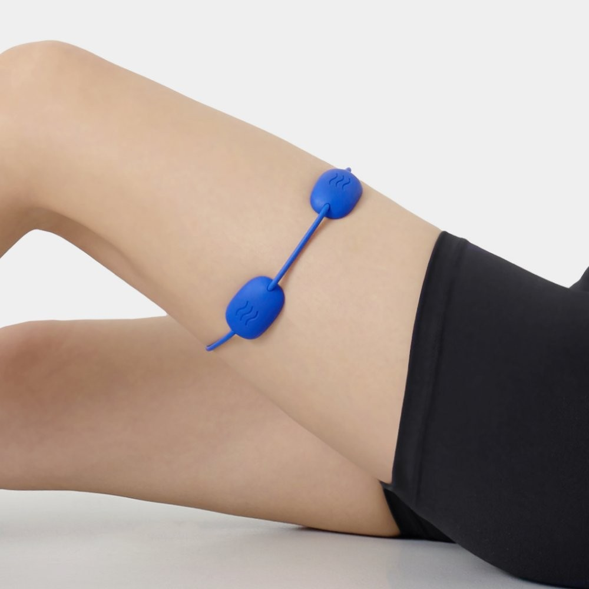
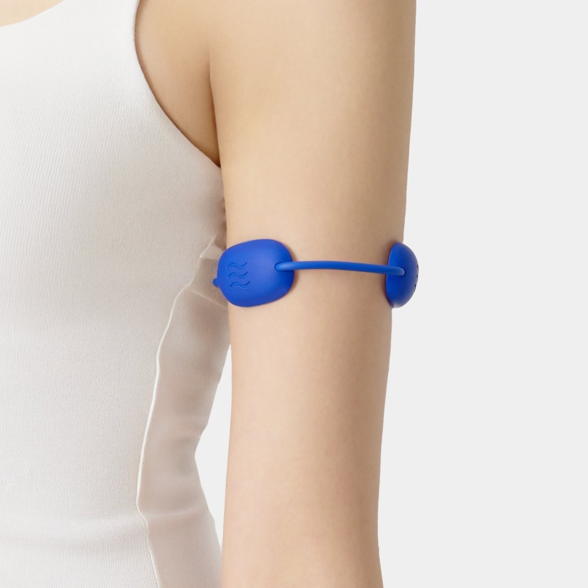

Barner EMS Mini Spot Review at a Glance
This Barner EMS Mini Spot review covers a small Korean portable massager from Barner (바로너) that combines EMS pulses with gentle heat. It is not a full neck wrap and not a leg compression boot like the Pulio or Drwell units we have reviewed — it is a mini “spot” pad you hold or rest on one tight area at a time: the nape, a shoulder, a forearm after mouse work, even a thigh after a commute.
In Korea it is sold as an everyday desk-and-commute gadget, often in blue, pink or black. If you want something you can drop in a tote and use for a short session after work, that is the job it is designed for.

What the Mini Spot Actually Is
Barner’s own Korean site frames the Mini Spot as an EMS-plus-heat device for short, targeted sessions — not a medical treatment and not a deep-tissue gun. Korean retail pages commonly list a very light body (around 51 g), several EMS pattern modes (often labeled P1–P6), a wide intensity range (often 1–15), and a few heat levels (often H1–H3, described in the 43–50°C range), with a session time around 15 minutes. Treat those numbers as listing-common, not something we re-measured on a bench.
The point of the design is convenience: no bulky wrap, no outlet needed once it is charged, and a small enough footprint that it does not look like clinic equipment on a café table.


How to Use the Barner EMS Mini Spot
- Charge it before the first use (follow the cable and indicator that come with your unit).
- Place the pad on clean, dry skin — nape, upper shoulder, forearm or another spot shown in the manual.
- Start low. EMS intensity that feels “interesting” on a low setting can feel sharp if you jump ahead.
- Add heat if you want warmth after the pulses already feel comfortable, not before.
- Stop after a short session (Korean listings commonly mention about 15 minutes) and do not fall asleep on it.
Do not use EMS devices on broken skin, over the front of the throat, or if you have a pacemaker or another condition your clinician has flagged. This is a consumer wellness gadget, not a diagnosis or a physiotherapy plan.
Feel, Heat and What Surprised Us
The pulse is a familiar EMS tingle, not a percussion thump. On the nape it feels like a small, rhythmic lift under the skin; on a forearm it feels more localized. Heat builds gradually rather than all at once. What surprised us is how little bag space it takes compared with a wrap-style neck massager — you can actually carry it. What can disappoint is coverage: it will not treat both shoulders at once, and it will not replace a full massage pillow or a compression boot.


Key Details
| Detail | What we know |
|---|---|
| Brand | Barner (바로너), Korea — official site baruner.kr |
| Product | EMS Mini Spot portable massager |
| What it combines | EMS pulses + heat in a mini pad |
| Colors shown | Blue, pink, black |
| Session (listing-common) | About 15 minutes |
| Other listing-common specs | Around 51 g; pattern modes often P1–P6; intensity often 1–15; heat often H1–H3 |
| U.S. Amazon | Identical Barner listing not confirmed — we link a similar-product search |
How It Compares
| Barner EMS Mini Spot | Wrap / pillow neck massagers | Leg air compression (Pulio, Drwell) | |
|---|---|---|---|
| Coverage | One small spot at a time | Whole neck / shoulders | Calves or thighs, not the neck |
| Portability | Tote-bag small | Bulkier | Home device |
| Best if you want | A short, targeted EMS-and-heat session | Hands-free wrap warmth | Recovery-style compression after standing or travel |
Pros & Cons
| Pros | Cons |
|---|---|
| Truly portable — easy to keep at a desk or in a bag | Treats only one small area at a time |
| EMS plus heat in one pad, which many wrap devices split | Not a substitute for clinical care or a full-body massage |
| Short suggested sessions fit a work break | Identical U.S. Amazon listing not confirmed |
| Multiple colors if you are gifting it | Listing-common specs (weight, °C, mode count) vary by page — check your box |
Who It Suits (and Who Should Skip It)
- Yes: Desk workers who want a small EMS-and-heat pad for the nape or shoulder after screen time.
- Yes: Travelers who will not pack a wrap-style massager.
- No: Anyone told to avoid EMS or heat devices, or anyone expecting a deep-tissue massage gun.
- No: Shoppers who want full-neck coverage or leg compression — look at those other categories instead.
Barner EMS Mini Spot FAQ
Is this a neck-wrap massager?
No. It is a mini spot pad. You place it on one area — often the nape or a shoulder — rather than wrapping the whole neck.
Does it get hot?
Korean listings describe several heat levels together with EMS. Comfort varies by skin and setting; start low and stop if it feels too warm.
Can I use it on my legs or arms?
Listing photos show placements beyond the neck, including forearm, upper arm and thigh. Follow the manual that ships with your unit and avoid areas your clinician has flagged.
Can I buy this exact model on Amazon?
We could not confirm an identical U.S. listing for the Barner EMS Mini Spot. The button below opens a search for similar portable EMS neck and shoulder massagers so you can compare options.
Similar Portable EMS Neck & Shoulder Massagers
The exact Barner Mini Spot is not always on U.S. Amazon, so here are similar portable EMS neck and shoulder massagers.